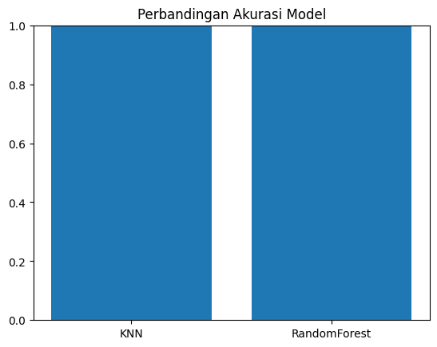

IDENTIFIKASI SUARA ‘BUKA TUTUP’ MENGGUNAKAN FEATURE STATISTIK TIME SERIES#
Identifikasi Suara “Buka – Tutup” Menggunakan Fitur Statistik Time Series bertujuan untuk membangun sebuah sistem yang mampu mengenali perintah suara sederhana, yaitu kata “buka” dan “tutup”, dengan memanfaatkan metode pembelajaran mesin berbasis fitur statistik dari sinyal audio.
Berikut adalah sumber datasetnya nya : https://www.kaggle.com/datasets/muhammadridhoisdi/audio-recognition-open-and-close.
Install & Import Library#
%pip install librosa numpy pandas scikit-learn matplotlib streamlit
import os
import librosa
import numpy as np
import pandas as pd
from sklearn.model_selection import train_test_split
from sklearn.preprocessing import MinMaxScaler
from sklearn.neighbors import KNeighborsClassifier
from sklearn.ensemble import RandomForestClassifier
from sklearn.metrics import accuracy_score, confusion_matrix, classification_report
import matplotlib.pyplot as plt
Requirement already satisfied: librosa in c:\users\thinkpad\appdata\local\programs\python\python310\lib\site-packages (0.11.0)
Requirement already satisfied: numpy in c:\users\thinkpad\appdata\local\programs\python\python310\lib\site-packages (2.2.6)
Requirement already satisfied: pandas in c:\users\thinkpad\appdata\local\programs\python\python310\lib\site-packages (2.3.2)
Requirement already satisfied: scikit-learn in c:\users\thinkpad\appdata\local\programs\python\python310\lib\site-packages (1.7.2)
Requirement already satisfied: matplotlib in c:\users\thinkpad\appdata\local\programs\python\python310\lib\site-packages (3.10.6)
Requirement already satisfied: streamlit in c:\users\thinkpad\appdata\local\programs\python\python310\lib\site-packages (1.51.0)
Requirement already satisfied: pooch>=1.1 in c:\users\thinkpad\appdata\local\programs\python\python310\lib\site-packages (from librosa) (1.8.2)
Requirement already satisfied: decorator>=4.3.0 in c:\users\thinkpad\appdata\roaming\python\python310\site-packages (from librosa) (5.2.1)
Requirement already satisfied: scipy>=1.6.0 in c:\users\thinkpad\appdata\local\programs\python\python310\lib\site-packages (from librosa) (1.15.3)
Requirement already satisfied: typing_extensions>=4.1.1 in c:\users\thinkpad\appdata\roaming\python\python310\site-packages (from librosa) (4.15.0)
Requirement already satisfied: lazy_loader>=0.1 in c:\users\thinkpad\appdata\local\programs\python\python310\lib\site-packages (from librosa) (0.4)
Requirement already satisfied: audioread>=2.1.9 in c:\users\thinkpad\appdata\local\programs\python\python310\lib\site-packages (from librosa) (3.1.0)
Requirement already satisfied: msgpack>=1.0 in c:\users\thinkpad\appdata\local\programs\python\python310\lib\site-packages (from librosa) (1.1.2)
Requirement already satisfied: soxr>=0.3.2 in c:\users\thinkpad\appdata\local\programs\python\python310\lib\site-packages (from librosa) (1.0.0)
Requirement already satisfied: soundfile>=0.12.1 in c:\users\thinkpad\appdata\local\programs\python\python310\lib\site-packages (from librosa) (0.13.1)
Requirement already satisfied: joblib>=1.0 in c:\users\thinkpad\appdata\local\programs\python\python310\lib\site-packages (from librosa) (1.5.2)
Requirement already satisfied: numba>=0.51.0 in c:\users\thinkpad\appdata\local\programs\python\python310\lib\site-packages (from librosa) (0.62.1)
Requirement already satisfied: tzdata>=2022.7 in c:\users\thinkpad\appdata\local\programs\python\python310\lib\site-packages (from pandas) (2025.2)
Requirement already satisfied: python-dateutil>=2.8.2 in c:\users\thinkpad\appdata\roaming\python\python310\site-packages (from pandas) (2.9.0.post0)
Requirement already satisfied: pytz>=2020.1 in c:\users\thinkpad\appdata\local\programs\python\python310\lib\site-packages (from pandas) (2025.2)
Requirement already satisfied: threadpoolctl>=3.1.0 in c:\users\thinkpad\appdata\local\programs\python\python310\lib\site-packages (from scikit-learn) (3.6.0)
Requirement already satisfied: kiwisolver>=1.3.1 in c:\users\thinkpad\appdata\local\programs\python\python310\lib\site-packages (from matplotlib) (1.4.9)
Requirement already satisfied: pillow>=8 in c:\users\thinkpad\appdata\local\programs\python\python310\lib\site-packages (from matplotlib) (11.3.0)
Requirement already satisfied: cycler>=0.10 in c:\users\thinkpad\appdata\local\programs\python\python310\lib\site-packages (from matplotlib) (0.12.1)
Requirement already satisfied: fonttools>=4.22.0 in c:\users\thinkpad\appdata\local\programs\python\python310\lib\site-packages (from matplotlib) (4.60.0)
Requirement already satisfied: pyparsing>=2.3.1 in c:\users\thinkpad\appdata\local\programs\python\python310\lib\site-packages (from matplotlib) (3.2.5)
Requirement already satisfied: contourpy>=1.0.1 in c:\users\thinkpad\appdata\local\programs\python\python310\lib\site-packages (from matplotlib) (1.3.2)
Requirement already satisfied: packaging>=20.0 in c:\users\thinkpad\appdata\roaming\python\python310\site-packages (from matplotlib) (25.0)
Requirement already satisfied: pyarrow<22,>=7.0 in c:\users\thinkpad\appdata\local\programs\python\python310\lib\site-packages (from streamlit) (21.0.0)
Requirement already satisfied: toml<2,>=0.10.1 in c:\users\thinkpad\appdata\local\programs\python\python310\lib\site-packages (from streamlit) (0.10.2)
Requirement already satisfied: cachetools<7,>=4.0 in c:\users\thinkpad\appdata\local\programs\python\python310\lib\site-packages (from streamlit) (6.2.1)
Requirement already satisfied: tenacity<10,>=8.1.0 in c:\users\thinkpad\appdata\local\programs\python\python310\lib\site-packages (from streamlit) (9.1.2)
Requirement already satisfied: pydeck<1,>=0.8.0b4 in c:\users\thinkpad\appdata\local\programs\python\python310\lib\site-packages (from streamlit) (0.9.1)
Requirement already satisfied: watchdog<7,>=2.1.5 in c:\users\thinkpad\appdata\local\programs\python\python310\lib\site-packages (from streamlit) (6.0.0)
Requirement already satisfied: protobuf<7,>=3.20 in c:\users\thinkpad\appdata\local\programs\python\python310\lib\site-packages (from streamlit) (6.33.0)
Requirement already satisfied: blinker<2,>=1.5.0 in c:\users\thinkpad\appdata\local\programs\python\python310\lib\site-packages (from streamlit) (1.9.0)
Requirement already satisfied: tornado!=6.5.0,<7,>=6.0.3 in c:\users\thinkpad\appdata\roaming\python\python310\site-packages (from streamlit) (6.5.2)
Requirement already satisfied: requests<3,>=2.27 in c:\users\thinkpad\appdata\local\programs\python\python310\lib\site-packages (from streamlit) (2.32.5)
Requirement already satisfied: gitpython!=3.1.19,<4,>=3.0.7 in c:\users\thinkpad\appdata\local\programs\python\python310\lib\site-packages (from streamlit) (3.1.45)
Requirement already satisfied: altair!=5.4.0,!=5.4.1,<6,>=4.0 in c:\users\thinkpad\appdata\local\programs\python\python310\lib\site-packages (from streamlit) (5.5.0)
Requirement already satisfied: click<9,>=7.0 in c:\users\thinkpad\appdata\local\programs\python\python310\lib\site-packages (from streamlit) (8.3.0)
Requirement already satisfied: jinja2 in c:\users\thinkpad\appdata\local\programs\python\python310\lib\site-packages (from altair!=5.4.0,!=5.4.1,<6,>=4.0->streamlit) (3.1.6)
Requirement already satisfied: jsonschema>=3.0 in c:\users\thinkpad\appdata\local\programs\python\python310\lib\site-packages (from altair!=5.4.0,!=5.4.1,<6,>=4.0->streamlit) (4.25.1)
Requirement already satisfied: narwhals>=1.14.2 in c:\users\thinkpad\appdata\local\programs\python\python310\lib\site-packages (from altair!=5.4.0,!=5.4.1,<6,>=4.0->streamlit) (2.10.1)
Requirement already satisfied: colorama in c:\users\thinkpad\appdata\roaming\python\python310\site-packages (from click<9,>=7.0->streamlit) (0.4.6)
Requirement already satisfied: gitdb<5,>=4.0.1 in c:\users\thinkpad\appdata\local\programs\python\python310\lib\site-packages (from gitpython!=3.1.19,<4,>=3.0.7->streamlit) (4.0.12)
Requirement already satisfied: llvmlite<0.46,>=0.45.0dev0 in c:\users\thinkpad\appdata\local\programs\python\python310\lib\site-packages (from numba>=0.51.0->librosa) (0.45.1)
Requirement already satisfied: platformdirs>=2.5.0 in c:\users\thinkpad\appdata\roaming\python\python310\site-packages (from pooch>=1.1->librosa) (4.4.0)
Requirement already satisfied: six>=1.5 in c:\users\thinkpad\appdata\roaming\python\python310\site-packages (from python-dateutil>=2.8.2->pandas) (1.17.0)
Requirement already satisfied: urllib3<3,>=1.21.1 in c:\users\thinkpad\appdata\local\programs\python\python310\lib\site-packages (from requests<3,>=2.27->streamlit) (2.5.0)
Requirement already satisfied: certifi>=2017.4.17 in c:\users\thinkpad\appdata\local\programs\python\python310\lib\site-packages (from requests<3,>=2.27->streamlit) (2025.10.5)
Requirement already satisfied: idna<4,>=2.5 in c:\users\thinkpad\appdata\local\programs\python\python310\lib\site-packages (from requests<3,>=2.27->streamlit) (3.11)
Requirement already satisfied: charset_normalizer<4,>=2 in c:\users\thinkpad\appdata\local\programs\python\python310\lib\site-packages (from requests<3,>=2.27->streamlit) (3.4.4)
Requirement already satisfied: cffi>=1.0 in c:\users\thinkpad\appdata\local\programs\python\python310\lib\site-packages (from soundfile>=0.12.1->librosa) (2.0.0)
Requirement already satisfied: pycparser in c:\users\thinkpad\appdata\local\programs\python\python310\lib\site-packages (from cffi>=1.0->soundfile>=0.12.1->librosa) (2.23)
Requirement already satisfied: smmap<6,>=3.0.1 in c:\users\thinkpad\appdata\local\programs\python\python310\lib\site-packages (from gitdb<5,>=4.0.1->gitpython!=3.1.19,<4,>=3.0.7->streamlit) (5.0.2)
Requirement already satisfied: MarkupSafe>=2.0 in c:\users\thinkpad\appdata\local\programs\python\python310\lib\site-packages (from jinja2->altair!=5.4.0,!=5.4.1,<6,>=4.0->streamlit) (3.0.3)
Requirement already satisfied: rpds-py>=0.7.1 in c:\users\thinkpad\appdata\local\programs\python\python310\lib\site-packages (from jsonschema>=3.0->altair!=5.4.0,!=5.4.1,<6,>=4.0->streamlit) (0.28.0)
Requirement already satisfied: referencing>=0.28.4 in c:\users\thinkpad\appdata\local\programs\python\python310\lib\site-packages (from jsonschema>=3.0->altair!=5.4.0,!=5.4.1,<6,>=4.0->streamlit) (0.37.0)
Requirement already satisfied: attrs>=22.2.0 in c:\users\thinkpad\appdata\local\programs\python\python310\lib\site-packages (from jsonschema>=3.0->altair!=5.4.0,!=5.4.1,<6,>=4.0->streamlit) (25.4.0)
Requirement already satisfied: jsonschema-specifications>=2023.03.6 in c:\users\thinkpad\appdata\local\programs\python\python310\lib\site-packages (from jsonschema>=3.0->altair!=5.4.0,!=5.4.1,<6,>=4.0->streamlit) (2025.9.1)
Note: you may need to restart the kernel to use updated packages.
[notice] A new release of pip is available: 23.0.1 -> 25.3
[notice] To update, run: python.exe -m pip install --upgrade pip
Ekstraksi Fitur dari Audio#
def extract_features(file_path):
x, sr = librosa.load(file_path, sr=None)
features = {
"mean": np.mean(x),
"std": np.std(x),
"max": np.max(x),
"min": np.min(x),
"rms": np.sqrt(np.mean(x**2)),
"zcr": np.mean(librosa.feature.zero_crossing_rate(x)),
"skew": pd.Series(x).skew(),
"kurt": pd.Series(x).kurt()
}
return features
Load dataset & buat CSV fitur#
base_path = r"C:\Users\ThinkPad\OneDrive\Documents\Proyek Sains Data\tugas"
data = []
for label in ["open", "close"]:
folder = os.path.join(base_path, label)
print("Membaca folder:", folder) # debug print
for file in os.listdir(folder):
if file.endswith(".wav"):
feat = extract_features(os.path.join(folder, file))
feat["label"] = label
data.append(feat)
df = pd.DataFrame(data)
df.to_csv("audio_features.csv", index=False)
df
Membaca folder: C:\Users\ThinkPad\OneDrive\Documents\Proyek Sains Data\tugas\open
Membaca folder: C:\Users\ThinkPad\OneDrive\Documents\Proyek Sains Data\tugas\close
---------------------------------------------------------------------------
KeyboardInterrupt Traceback (most recent call last)
Cell In[3], line 10
8 for file in os.listdir(folder):
9 if file.endswith(".wav"):
---> 10 feat = extract_features(os.path.join(folder, file))
11 feat["label"] = label
12 data.append(feat)
Cell In[2], line 2, in extract_features(file_path)
1 def extract_features(file_path):
----> 2 x, sr = librosa.load(file_path, sr=None)
4 features = {
5 "mean": np.mean(x),
6 "std": np.std(x),
(...)
12 "kurt": pd.Series(x).kurt()
13 }
14 return features
File ~\AppData\Local\Programs\Python\Python310\lib\site-packages\librosa\core\audio.py:176, in load(path, sr, mono, offset, duration, dtype, res_type)
173 else:
174 # Otherwise try soundfile first, and then fall back if necessary
175 try:
--> 176 y, sr_native = __soundfile_load(path, offset, duration, dtype)
178 except sf.SoundFileRuntimeError as exc:
179 # If soundfile failed, try audioread instead
180 if isinstance(path, (str, pathlib.PurePath)):
File ~\AppData\Local\Programs\Python\Python310\lib\site-packages\librosa\core\audio.py:209, in __soundfile_load(path, offset, duration, dtype)
206 context = path
207 else:
208 # Otherwise, create the soundfile object
--> 209 context = sf.SoundFile(path)
211 with context as sf_desc:
212 sr_native = sf_desc.samplerate
File ~\AppData\Local\Programs\Python\Python310\lib\site-packages\soundfile.py:690, in SoundFile.__init__(self, file, mode, samplerate, channels, subtype, endian, format, closefd, compression_level, bitrate_mode)
687 self._bitrate_mode = bitrate_mode
688 self._info = _create_info_struct(file, mode, samplerate, channels,
689 format, subtype, endian)
--> 690 self._file = self._open(file, mode_int, closefd)
691 if set(mode).issuperset('r+') and self.seekable():
692 # Move write position to 0 (like in Python file objects)
693 self.seek(0)
File ~\AppData\Local\Programs\Python\Python310\lib\site-packages\soundfile.py:1254, in SoundFile._open(self, file, mode_int, closefd)
1252 else:
1253 file = file.encode(_sys.getfilesystemencoding())
-> 1254 file_ptr = openfunction(file, mode_int, self._info)
1255 elif isinstance(file, int):
1256 file_ptr = _snd.sf_open_fd(file, mode_int, self._info, closefd)
KeyboardInterrupt:
Split & Normalisasi#
df = pd.read_csv("audio_features.csv")
X = df.drop("label", axis=1)
y = df["label"]
scaler = MinMaxScaler()
X_scaled = scaler.fit_transform(X)
X_train, X_test, y_train, y_test = train_test_split(
X_scaled, y, test_size=0.2, random_state=42, stratify=y
)
Training KNN & RandomForest#
models = {
"KNN": KNeighborsClassifier(n_neighbors=5),
"RandomForest": RandomForestClassifier(n_estimators=200, random_state=42),
}
results = {}
for name, model in models.items():
model.fit(X_train, y_train)
y_pred = model.predict(X_test)
acc = accuracy_score(y_test, y_pred)
results[name] = acc
print(f"\n=== {name} ===")
print("Accuracy:", acc)
print(classification_report(y_test, y_pred))
=== KNN ===
Accuracy: 1.0
precision recall f1-score support
close 1.00 1.00 1.00 200
open 1.00 1.00 1.00 200
accuracy 1.00 400
macro avg 1.00 1.00 1.00 400
weighted avg 1.00 1.00 1.00 400
=== RandomForest ===
Accuracy: 1.0
precision recall f1-score support
close 1.00 1.00 1.00 200
open 1.00 1.00 1.00 200
accuracy 1.00 400
macro avg 1.00 1.00 1.00 400
weighted avg 1.00 1.00 1.00 400
Classifier dan Encode Labelnya#
from sklearn.preprocessing import LabelEncoder
from sklearn.ensemble import RandomForestClassifier
import joblib
# Encode label (open/close -> 0/1)
le = LabelEncoder()
y_train_enc = le.fit_transform(y_train)
# Buat model classifier
rf_model = RandomForestClassifier()
rf_model.fit(X_train, y_train_enc)
# Simpan model dan encoder
joblib.dump(scaler, "scaler.pkl")
joblib.dump(rf_model, "rf_model.pkl")
joblib.dump(le, "label_encoder.pkl") # penting, dipakai saat prediksi
print("✅ Model dan scaler berhasil disimpan!")
✅ Model dan scaler berhasil disimpan!
Plot Grafik Akurasi#
plt.bar(results.keys(), results.values())
plt.title("Perbandingan Akurasi Model")
plt.ylim(0, 1)
plt.show()
